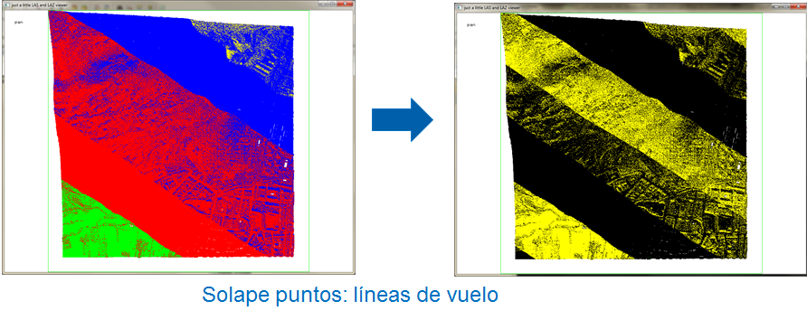
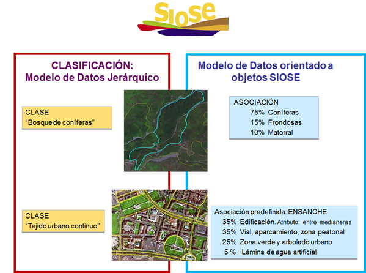
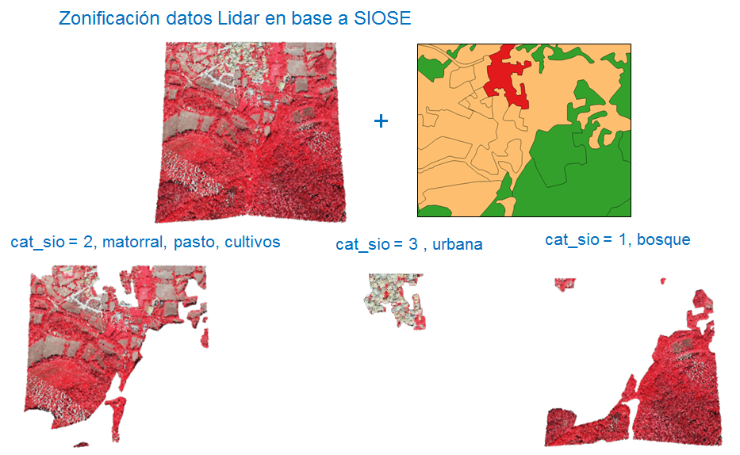

Análisis y tratamiento de los datos LiDAR
El análisis y tratamiento de los datos LiDAR, hace referencia a todo el conjunto de procesos automáticos que permiten el filtrado de puntos de solape entre pasadas, la identificación y filtrado de puntos ruido y los algoritmos automáticos de clasificación.
La metodología de clasificación que se plantea se divide en tres fases: la primera consiste en la segmentación de los archivos LAS según una simplificación de las categorías SIOSE (Sistema de Información sobre Ocupación del Suelo de España), la segunda basada en la clasificación de la nube de puntos y la tercera, fundamentada en el cálculo de índices de vegetación como mejora de la clasificación.
Operaciones previas a los procesos propios de clasificación:
-
Se eliminan los puntos duplicados en la nube de puntos:
lasduplicate -i [directory][file-name].laz -unique_xyz -olaz -odir [directory]
-
Se teselan o tilean los archivos LAS en teselas de 1x1 km de ancho y alto:
Es importante el tileado de los archivos para mantener en un valor razonable el número de puntos por archivo, con objeto de utilizar la memoria principal de la manera más eficiente y tener la oportunidad de aprovechar las ventajas de un procesamiento paralelo.
Antes de su procesado y con el fin de evitar artefactos de borde, se recrecen las teselas aplicando un buffer.
lastile -i [directory][file-name].laz -cores 8 -buffer 50 -tile_size 1000 -reversible -odir [directory] -olaz
-
Detección e identificación de puntos de solape obteniendo una nube de puntos más constante.
Se clasifican los puntos de exceso en la categoría 12:
lasoverage -i [directory][file-name].laz -step 1 -odir [directory] -olaz

-
Detección y clasificación de puntos ruido en función de los valores de intensidad, y de si los puntos son aislados en la nube de puntos.
Se buscan puntos que tienen cinco o menos puntos alrededor de una malla de 3 x 3 x 3 (con el respectivo punto en el centro de la celda), dónde cada celda es de cuatro metros de tamaño:
lasnoise -i [directory] [file-name].laz -olaz -step 4 -isolated 5 classify_as 7 -classify_intensity_below_as 5 7 -odir [filename]
Proceso de clasificación:
-
SEGMENTACIÓN DE LOS ARCHIVOS LiDAR EN BASE A CATEGORÍAS SIOSE
El Sistema de Información sobre Ocupación del Suelo de España (SIOSE), es una base de datos que codifica la naturaleza del suelo de toda España, en función de lo que se encuentra en él. Su valor de precisión se corresponde con una escala de referencia 1:25.000. Permite describir el terreno mediante coberturas o combinaciones de ellas, con indicación de diferentes porcentajes de ocupación del suelo.

Para un mejor ajuste de los parámetros necesarios en el proceso de clasificación de usos del suelo, realizamos una segmentación de los archivos LiDAR en base a las siguientes categorías SIOSE simplificadas:
- Bosque (1)
- Matorral, pasto, prado, cultivos herbáceos y cultivos arbóreos (2)
- Urbana (3)
- Casas aisladas (4)
- Roquedos (5)
- Industrial (6)
- Agua (7)
Para ello se ha diseñado un proceso en FME que nos permite pasar de las coberturas simples y compuestas que contempla el modelo de datos SIOSE, a las categorías SIOSE simplificadas, y segmentar la nube de puntos LiDAR en base a esta nueva categorización.

Puede consultar los detalles y el código del proceso en el apartado Workbenchs > Zonificación SIOSE
-
DETECCIÓN Y CLASIFICACIÓN DE LOS PUNTOS TERRENO
Los puntos de los ficheros LAS son clasificados de forma automática en 'puntos suelo' y 'puntos no suelo', según el algoritmo de clasificación implementado en la herramienta LAStools.
El proceso de clasificación se basa en la reconstrucción progresiva del terreno.
Se establece una primera aproximación de la superficie a partir de algunos de los puntos de la nube más bajos. A partir de esa primera aproximación se establece un criterio (ángulo y distancia) que en caso de cumplirse, permite incorporar un punto adicional a la superficie:
lasground -i [directory][file-name].laz -odir [directory] -olaz -step [n] -stddev [n] -offset [n] -spike [n] -ignore_class 7 12
Definición de parámetros para el comando
lasgrounden función de las categorías SIOSE simplificadas:
Clase Step Spike Offset Standard deviation Bosque (1) 5 0.50 0.20 1 Terreno llano (2) 10 1 0.05 1 Urbana city (3) 25 0.50 0.05 1 Urbana (town) (3) 10 1 0.05 1 Casas aisladas (4) 8 1 0.05 1 Roquedos (5) 10 1 0.05 1 Industrial (6) 30 0.50 0.05 1 A continuación se calculan las alturas de los puntos con respecto a los puntos suelo:
lasheight -i directory][file-name].laz -classify_below -0.5 7 -classify_above 100.0 7 -classify_between 0 0.5 3 -classify_between 0.5 3 4 -classify_between 3 100.0 5 -ignore_class 7 12 -store_in_user_data
Los puntos de los ficheros LAS son clasificados de forma automática en puntos de 'vegetación baja', 'vegetación media', 'vegetación alta' y 'construcciones':
lasclassify -i [directory][file-name].laz -odir [directory] -olaz -step [n] -planar [n] -ground_offset [n] -ignore_class 7 12
Definición de parámetros para el comando
lasclassifyen función de las categorías SIOSE simplificadas:Clase Step Planar Ground Offset Bosque (1) 2 0.40 2 Terreno llano (2) 3 0.10 2 Urbana city (3) 2 0.10 2 Urbana (town) (3) 2 0.10 2 Casas aisladas (4) 2 0.10 2 Roquedos (5) 3 0.10 2 Industrial (6) 2 0.30 3 Estos tres procesos se incluyen para su ejecución dentro de un workbench, cuyos detalles y código puede consultar en el apartado Workbenchs > Clasificación LiDAR
-
CÁLCULO DEL ÍNDICE DE VEGETACIÓN DE DIFERENCIA NORMALIZADA (NDVI), COMO MEJORA A LA CLASIFICACIÓN
Un Índice de Vegetación de Diferencia Normalizada (NDVI), es una combinación de bandas espectrales capturadas por un sensor. Permite discriminar cubiertas que tienen un comportamiento reflectivo distinto entre dos o más bandas del espectro electromagnético.
El NDVI, es uno de los más utilizados a la hora de estimar la cantidad, calidad y desarrollo la vegetación. Se calcula por medio de la luz visible e infrarroja cercana reflejada por la vegetación. El cálculo de éste índice se realiza con reflectividades, pero cuando no es necesario conceder un valor físico a los resultados, se emplean directamente los niveles digitales.
Se utiliza la siguiente expresión:
NDVI= (IRC-R))/(IRC+R)dónde: IRC es la respuesta infrarrojo cercano y R es la respuesta en el rojo.
Los valores de NDVI varían entre -1 y 1. A continuación se presentan los valores aproximados del NDVI para los diferentes tipos de cubiertas, que servirán para establecer los umbrales de clasificación:
NO VEGETACIÓN
Agua Playa Carreteras Caminos Edificios < 0 < 0.05 < 0.10 < 0.15 < 0.10 VEGETACIÓN
Área quemada Dunas Pasto Arbolado Campo de golf < 0.10 0.10 - 0.20 0.20 - 0.30 0.30 - 0.40 0.50 El índice de vegetación se ha utilizado como mejora de la clasificación obtenida en el proceso de clasificación.
Para ello se definen una serie de condiciones de clasificación a modo de árbol de decisión que permiten corregir valores de clasificación asignados de forma errónea.
La implementación del árbol de decisión se ha realizado en un proyecto en FME.
Ejemplo de condición: Para puntos clasificados como urbana (6) de forma errónea.
clasificación = 6 && ndvi > 0.2 && height >=0 && height < 0.5se reclasifica como 'vegetación baja' (3)
Operaciones posteriores a los procesos de clasificación:
-
Unión de teselas de 1x1 km en las cuadrículas de 2x2 km originales en formato LAS.
La unión de teselas de 1x1 km para generar cuadrículas de 2x2 km se realiza mediante un proceso en FME.
Se cargan los archivos LAS correspondientes a la cuadrícula y a continuación se unen. Posteriormente se realiza un recorte con la hoja de la cuadrícula correspondiente, para de esta manera eliminar la zona de buffer incorporada en el proceso de tileado.
De esta forma se obtienen finalmente todos los archivos LAS (2x2 km), clasificados de acuerdo a la clasificación propuesta por la American Society for Photogrammetry and Remote Sensing (ASPRS):
Clasificación Valores 0 Created, never classified 1 Unclassified 2 Ground 3 Low Vegetation 4 Medium Vegetation 5 High Vegetation 6 Building 7 Low Point (noise) 8 Model Key-point (mass point) 9 Water 10 Reserved for ASPRS Definition 11 Reserved for ASPRS Definition 12 Overlap Points 13-31 reserved for ASPRS Definition Puede consultar los detalles y el código del proceso en el apartado Workbenchs > Mejora NVDI